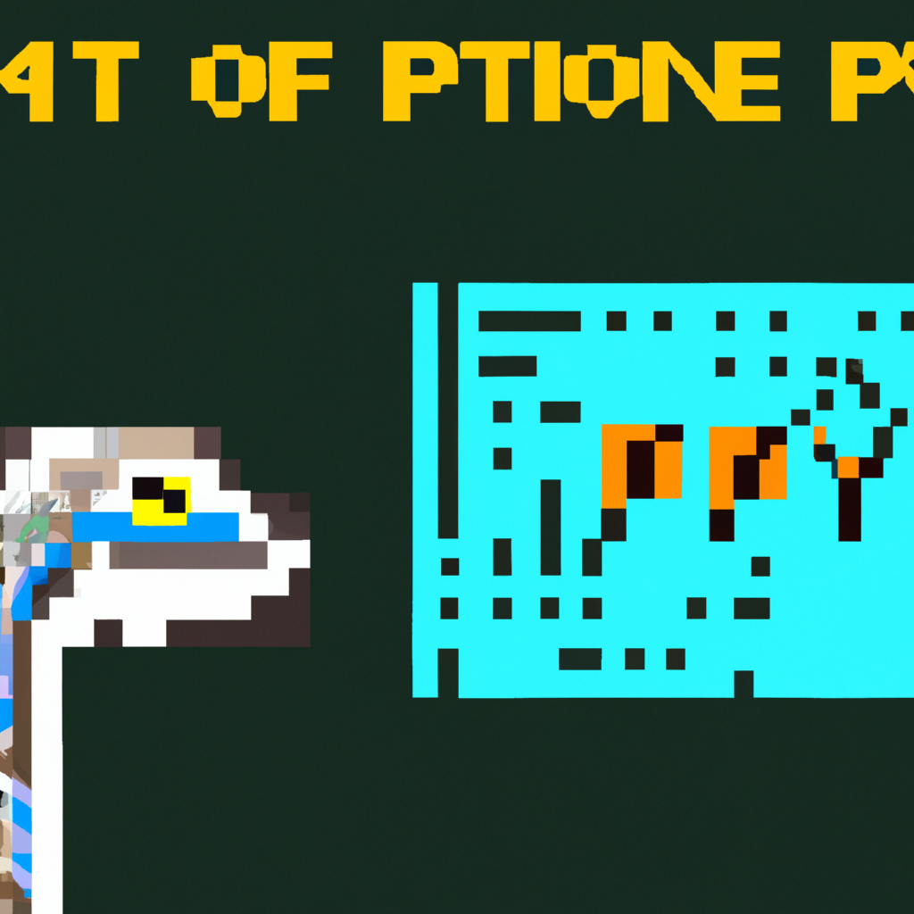

The future of python and AI
Python and Artificial Intelligence (AI) are an amazing combination that has only recently begun to blossom. As AI begins to build its own logic, the Python programming language is becoming ever more powerful.
Python and AI are often seen as being complimentary technologies, as AI relies on data to help learn and improve, while Python provides clean, readable, and adaptable code that can be used to create the sorts of algorithms that underpin AI. Machine learning (ML) and deep learning (DL) are two key types of AI, and Python is an ideal choice for their development.
Builders of AI now tend to use Python for projects in this field. The language can be used for development of predictive analytics and ML models, as well as DL capabilities. Python is also used in natural language processing (NLP), a technology focused on helping machines to interpret human language, and robotics, alongside other scientific disciplines.
Python is quickly becoming an essential part of AI development, as the language is designed for creating projects that will scale-up; particularly when it comes to intensive computing tasks. Many frameworks for deep learning libraries such as Caffe and TensorFlow, and numerical computation libraries like SciPy and NumPy, are all written in Python, meaning the language can provide the standards and tools needed for creating complex projects.
The success of AI and Python is set to continue, with the language becoming ever more popular for building projects. While AI and Python are now a partnership to behold, the combination could be used to truly advanced the future of technological development. With the tools as powerful as these, creators have the potential to create the unthought-of.